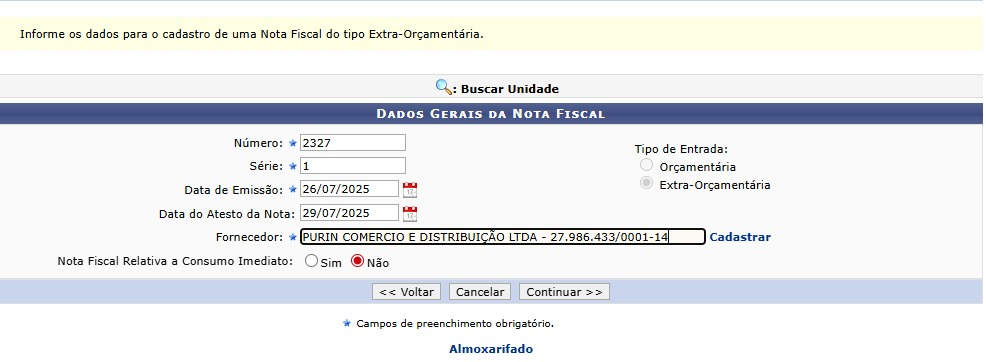

Sobre
Seja bem-vindo ao setor de Almoxarifado da UFRJ. Este espaço foi desenvolvido para orientar os novos servidores sobre os processos, rotinas e responsabilidades do setor.
Checklist Diário
Procedimentos para início e fim do expediente, verificação de materiais e conferência básica.
- fazer o café (O primeiro a chegar)
- Verificar os Emails
- Atualizar as Planilhas
- Organizar documentos
Controle de Acessos
Identificação dos responsáveis pelo almoxarifado e controle de entrada/saída do setor.
Entrada de Materiais
Registro no sistema de uma nova NOTA FISCAL
Cadastrando a Nota Fiscal

-
Selecione o tipo:
Observação: Sempre será Extra-Orçamentária!

-
Com o auxilio da nota fiscal preencha as informações abaixo corretamente:

-
Suas informações devem ficar mais ou menos assim:
 -
Preencha a tela seguinte com as informações da NOTA FISCAL:
Obs: DATA DE VALIDADE E DATA DE GARANTIA NÃO precisam ser preenchidas!
-
Após preencher VERIFIQUE as informações e caso necessite CORRIJA:
Estando tudo certo, pode continuar!
-
Agora é só confirmar e imprimir!
Saída e Baixa
A saída de material ocorre no SISU (Links úteis), segue o passo a passo para realizar a saída de material.
Essa é sua tela inicial após realizar o login:
Após realizar login, essa será a tela inicial:
Selecione a parte de estoque e depois "Registrar Saida":
Aqui você seleciona os materiais:
Digite o item que será dado a baixa e clique em adicionar. Segue exemplo abaixo:
Após adicionar iremos dizer o tipo de saida:
Selecionando o Destino:
Depois de realizar a baixa, essa é a sua tela final:

Na maioria dos casos o "Tipo de Saída" será "Saída"

Agora é só finalizar!


Agora é só imprimir DUAS cópias do arquivo e carimbar para assintaura!
Como Iniciar um Processo:
Esse topico serve para QUALQUER processo.
-
Essa é a tela inicial, clique em iniciar o processo:

-
Selecione o tipo de processo:

-
Essa será a a sua tela seguinte, Não alterar o "Automático" e SEMPRE será "Público":

Pronto! você abriu o seu processo!
Atestado_de_capacidade_Tecnica
Introdução do que se trata
-
Inicie um novo processo:
-
Selecione o tipo de processo, abaixo contém um processo para seguir como base:
Lembre-se de ALTERAR as informações
-
Adicionar documentos:
Lembre-se todo PDF ou documento que você baixou entra como documento EXTERNO!
Essa é a ordem que os documentos devem estar, se houver ATA de registro de preço substituir o relátorio de dispensa!

Aprovação
Fluxo de aprovação de requisicao pelo responsável da unidade.
Aprovação
Fluxo de aprovação de requisicao pelo responsável da unidade.
Aprovação
Fluxo de aprovação de requisicao pelo responsável da unidade.
Aprovação
Fluxo de aprovação de requisicao pelo responsável da unidade.
Aprovação
Fluxo de aprovação de requisicao pelo responsável da unidade.
Aprovação
Fluxo de aprovação de requisicao pelo responsável da unidade.
Aprovação
Fluxo de aprovação de requisicao pelo responsável da unidade.
Registro de Bens
Criação de tombamento e vinculação de patrimônio à unidade.
Movimentação
Transferência e baixa de bens permanentes.
Abertura
Iniciar processo filho no sistema, definindo tipo e acesso público.
Documentação
Ordem dos anexos obrigatórios no processo e uso de modelos.